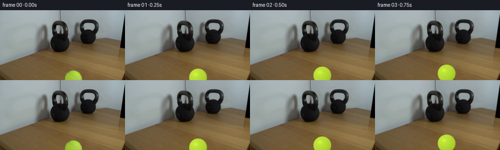
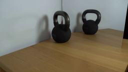
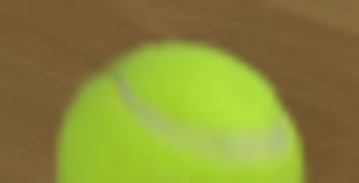
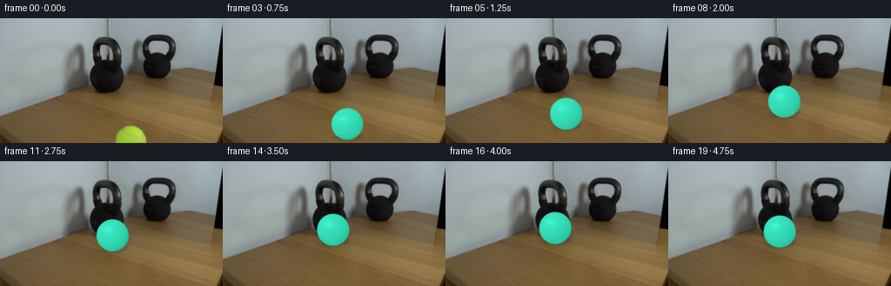
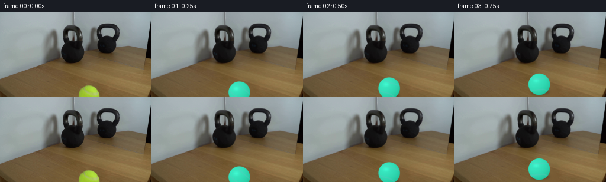
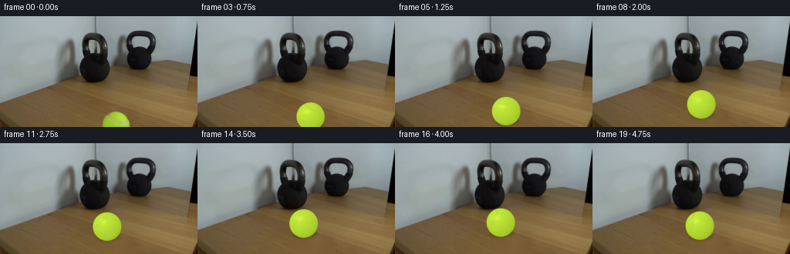

CODING AGENTS AS PIXEL WORLD MODELS
traex/GPT-5.6-Sol · 0155
点击播放 · 原生 RGB 像素
逐轮保存的候选
回放视频、检查图与代码变化。
每份候选均可单独播放。实际图片检查记录在下方工具轨迹中。
候选 01播放与检查图
点击播放 · 原生 RGB 像素

展开代码变化
--- 上一保存版本 +++ 本次保存版本 @@ -0,0 +1,128 @@ +from pathlib import Path +import numpy as np +import cv2 +import artifact_io + +CASE_DIR = Path(__file__).resolve().parent +N, H, W = 20, 144, 256 + + +def build_clean_plate(first): + """Remove the partly cropped foreground ball using neighboring tabletop texture.""" + # Reflect padding gives the inpainting solver valid context beneath the image edge. + padded = cv2.copyMakeBorder(first, 0, 34, 0, 0, cv2.BORDER_REFLECT_101) + mask = np.zeros(padded.shape[:2], np.uint8) + cv2.ellipse(mask, (151, 143), (24, 25), 0, 0, 360, 255, -1) + return cv2.inpaint(padded, mask, 5, cv2.INPAINT_TELEA)[:H] + + +def soft_ellipse_mask(cx, cy, rx, ry, feather=1.25): + yy, xx = np.mgrid[:H, :W] + q = np.sqrt(((xx-cx)/rx)**2 + ((yy-cy)/ry)**2) + return np.clip((1.0 + feather/rx - q) * rx/feather, 0, 1).astype(np.float32) + + +def draw_ball(base, cx, cy, r, angle, contact=False): + """Render a softly antialiased fuzzy tennis ball with rotating curved seams.""" + scale = 4 + hh, ww = H*scale, W*scale + layer = np.zeros((hh, ww, 4), np.uint8) + # Work at 4x to preserve the photographic softness of the source frame. + c = (int(round(cx*scale)), int(round(cy*scale))) + rr = int(round(r*scale)) + + # Ground contact shadow. It tightens and darkens as the ball gets farther into shot. + sh = np.zeros((hh, ww), np.uint8) + cv2.ellipse(sh, (c[0]+2*scale, int((cy+r*.78)*scale)), + (int(r*.88*scale), int(r*.24*scale)), -4, 0, 360, 145, -1) + sh = cv2.GaussianBlur(sh, (0,0), 2.0*scale) + alpha = sh.astype(np.float32)/255.0 * .38 + rgb = cv2.resize(base, (ww,hh), interpolation=cv2.INTER_CUBIC).astype(np.float32) + rgb *= (1-alpha[...,None]) + + # Ball mask and directional yellow-green shading. + yy, xx = np.mgrid[:hh, :ww] + dx=(xx-c[0])/(rr+1e-5); dy=(yy-c[1])/(rr+1e-5) + dist=np.sqrt(dx*dx+dy*dy) + edge=np.clip((1.035-dist)*rr/3.2,0,1) + z=np.sqrt(np.clip(1-dx*dx-dy*dy,0,1)) + light=np.clip(.58 + .28*z - .17*dx - .21*dy,0,1) + # A subtle fuzzy grain, deterministic and fixed to the rotating ball coordinates. + rng=np.random.default_rng(155) + noise=cv2.GaussianBlur(rng.normal(0,1,(hh,ww)).astype(np.float32),(0,0),1.0) + col=np.empty((hh,ww,3),np.float32) + col[...,0]=132 + 62*light + noise*2.0 + col[...,1]=169 + 64*light + noise*2.3 + col[...,2]=20 + 38*light + noise*1.0 + rgb = rgb*(1-edge[...,None]) + col*edge[...,None] + + # Two pale, curved seam arcs rotate around the ball as it rolls left. + seam=np.zeros((hh,ww),np.uint8) + a=np.deg2rad(angle) + # Parametric S-like seam pair, rotated in image space. + for off in (-0.56,0.56): + pts=[] + for t in np.linspace(-1.12,1.12,100): + u=off + .24*np.sin(t*2.15) + v=t + xr=u*np.cos(a)-v*np.sin(a) + yr=u*np.sin(a)+v*np.cos(a) + if xr*xr+yr*yr < .95: + pts.append([int(c[0]+xr*rr),int(c[1]+yr*rr)]) + if len(pts)>1: + cv2.polylines(seam,[np.asarray(pts,np.int32)],False,185, max(2,int(r*.085*scale)),cv2.LINE_AA) + seam=cv2.GaussianBlur(seam,(0,0),.40*scale).astype(np.float32)/255 + seam*=edge + seam_col=np.array([189,192,105],np.float32) + rgb=rgb*(1-seam[...,None]*.45)+seam_col*seam[...,None]*.45 + + # Soft hotspot from the upper-left wall illumination. + hi=np.exp(-(((dx+.28)/.34)**2+((dy+.34)/.25)**2)*1.7)*edge + rgb=np.clip(rgb+hi[...,None]*np.array([18,19,8]),0,255) + out=cv2.resize(rgb.astype(np.uint8),(W,H),interpolation=cv2.INTER_AREA) + return out + + +def position(i): + # Screen-space perspective trajectory toward the near face of the left kettlebell. + # Frame 0 starts at (151,143), radius ~18, exactly as photographed. Contact at frame 16. + if i <= 16: + t=i/16.0 + ease=t*(1.85-.85*t) # gradual physical deceleration toward the heavy bell + x=151 + (126.0-151)*ease + y=143 + (77.0-143)*ease + r=18 + (18.3-18)*ease + else: + # Tiny compliant rebound; the 30 lb kettlebell remains immovable. + q=(i-16)/3.0 + x=126 + 2.7*np.sin(q*np.pi*.72) + y=77 + 4.1*q + r=18.3 + return x,y,r + + +def main(): + # OpenCV loads BGR; generation stays in BGR until artifact conversion. + first=cv2.imread(str(CASE_DIR/'first_frame.png'),cv2.IMREAD_COLOR) + assert first is not None and first.shape==(H,W,3) + clean=build_clean_plate(first) + frames=[] + previous_x,previous_y,_=position(0) + travel=0.0 + for i in range(N): + if i==0: + frame=first.copy() # contract: must be pixel-identical + else: + x,y,r=position(i) + travel += np.hypot(x-previous_x,y-previous_y) + # no camera motion and no motion blur: constant-rate real-time locked shot + frame=draw_ball(clean,x,y,r,-travel/r*180/np.pi,contact=(i>=16)) + previous_x,previous_y=x,y + frames.append(cv2.cvtColor(frame,cv2.COLOR_BGR2RGB)) + frames=np.stack(frames).astype(np.uint8) + # Explicitly restore original bytes after all conversions. + frames[0]=cv2.cvtColor(first,cv2.COLOR_BGR2RGB) + artifact_io.save(frames,CASE_DIR) + +if __name__=='__main__': + main()
候选 02播放与检查图
点击播放 · 原生 RGB 像素


展开代码变化
--- 上一保存版本
+++ 本次保存版本
@@ -51,9 +51,10 @@
rng=np.random.default_rng(155)
noise=cv2.GaussianBlur(rng.normal(0,1,(hh,ww)).astype(np.float32),(0,0),1.0)
col=np.empty((hh,ww,3),np.float32)
- col[...,0]=132 + 62*light + noise*2.0
+ # OpenCV order is BGR; match the lime-yellow felt in frame zero.
+ col[...,0]=20 + 38*light + noise*1.0
col[...,1]=169 + 64*light + noise*2.3
- col[...,2]=20 + 38*light + noise*1.0
+ col[...,2]=132 + 62*light + noise*2.0
rgb = rgb*(1-edge[...,None]) + col*edge[...,None]
# Two pale, curved seam arcs rotate around the ball as it rolls left.
@@ -73,12 +74,12 @@
cv2.polylines(seam,[np.asarray(pts,np.int32)],False,185, max(2,int(r*.085*scale)),cv2.LINE_AA)
seam=cv2.GaussianBlur(seam,(0,0),.40*scale).astype(np.float32)/255
seam*=edge
- seam_col=np.array([189,192,105],np.float32)
+ seam_col=np.array([105,192,189],np.float32)
rgb=rgb*(1-seam[...,None]*.45)+seam_col*seam[...,None]*.45
# Soft hotspot from the upper-left wall illumination.
hi=np.exp(-(((dx+.28)/.34)**2+((dy+.34)/.25)**2)*1.7)*edge
- rgb=np.clip(rgb+hi[...,None]*np.array([18,19,8]),0,255)
+ rgb=np.clip(rgb+hi[...,None]*np.array([8,19,18]),0,255)
out=cv2.resize(rgb.astype(np.uint8),(W,H),interpolation=cv2.INTER_AREA)
return out
@@ -89,14 +90,14 @@
if i <= 16:
t=i/16.0
ease=t*(1.85-.85*t) # gradual physical deceleration toward the heavy bell
- x=151 + (126.0-151)*ease
- y=143 + (77.0-143)*ease
+ x=151 + (137.0-151)*ease
+ y=143 + (103.0-143)*ease
r=18 + (18.3-18)*ease
else:
# Tiny compliant rebound; the 30 lb kettlebell remains immovable.
q=(i-16)/3.0
- x=126 + 2.7*np.sin(q*np.pi*.72)
- y=77 + 4.1*q
+ x=137 + 2.7*np.sin(q*np.pi*.72)
+ y=103 + 4.1*q
r=18.3
return x,y,r
可观测工具轨迹
实际执行的命令与返回图片。
命令 1exit 0
/bin/bash -lc "cat GENERATION_RULES.md && printf '\\n---PROMPT---\\n' && cat prompt.txt"
命令 2exit 1
/bin/bash -lc "find . -maxdepth 2 -type f -printf '%p %s bytes\\n' | sort && printf '\\nTOOLS\\n' && command -v ffmpeg && command -v python3 && python3 - <<'PY' mods=['cv2','PIL','numpy','imageio','torch'] for m in mods: try: x=__import__(m); print(m,'OK',getattr(x,'__version__','')) except Exception as e: print(m,'NO',e) PY"
命令 3exit 0
/bin/bash -lc "sed -n '1,240p' artifact_io.py"
命令 4exit 0
/bin/bash -lc "python3 - <<'PY' mods=['cv2','PIL','numpy','imageio','scipy'] for m in mods: try: x=__import__(m); print(m,'OK',getattr(x,'__version__','')) except Exception as e: print(m,'NO',repr(e)) PY printf '\\nBIN\\n'; for x in ffmpeg convert magick; do command -v \""'$x" || true; done'
命令 5exit 0
/bin/bash -lc "python3 - <<'PY'
import cv2, numpy as np
im=cv2.imread('first_frame.png')
hsv=cv2.cvtColor(im,cv2.COLOR_BGR2HSV)
# yellowgreen hue opencv 25-50 sat
mask=(hsv[:,:,0]>25)&(hsv[:,:,0]<55)&(hsv[:,:,1]>80)&(np.indices(hsv.shape[:2])[0]>110)
y,x=np.where(mask)
print(x.min(),x.max(),y.min(),y.max(),len(x))
for yy in range(118,144):
xs=np.where(mask[yy])[0]
if len(xs): print(yy,xs.min(),xs.max(),len(xs), im[yy,150][::-1])
PY"命令 6exit 0
/bin/bash -lc "mkdir -p .tmp && python3 - <<'PY'
import cv2,numpy as np
im=cv2.imread('first_frame.png')
# pad bottom reflect, inpaint ellipse/shadow
pad=cv2.copyMakeBorder(im,0,30,0,0,cv2.BORDER_REFLECT_101)
mask=np.zeros(pad.shape[:2],np.uint8)
cv2.ellipse(mask,(151,143),(24,25),0,0,360,255,-1)
# no need all hidden lower fake region perhaps
for method,n in [(cv2.INPAINT_TELEA,'telea'),(cv2.INPAINT_NS,'ns')]:
out=cv2.inpaint(pad,mask,5,method)[:144]
cv2.imwrite('.tmp/'+n+'.png',out)
# donor shift blend
out=im.copy().astype(np.float32)
y,x=np.mgrid[0:144,0:256]
a=np.clip((1-np.sqrt(((x-151)/25)**2+((y-143)/27)**2))*4,0,1)[...,None]
donor=np.roll(im,50,axis=1).astype(np.float32) # roll means target gets source x-50 (bad left)
donor=np.roll(im,-50,axis=1).astype(np.float32)
out=out*(1-a)+donor*a
cv2.imwrite('.tmp/donor.png',out.astype(np.uint8))
PY"命令 7exit 0
/bin/bash -lc "python3 - <<'PY'
from PIL import Image
im=Image.open('first_frame.png')
im.crop((125,118,176,144)).resize((510,260)).save('.tmp/ball_zoom.png')
PY"命令 8exit 0
/bin/bash -lc "cat > generate.py <<'PY'
from pathlib import Path
import numpy as np
import cv2
import artifact_io
CASE_DIR = Path(__file__).resolve().parent
N, H, W = 20, 144, 256
def build_clean_plate(first):
\"\"\"Remove the partly cropped foreground ball using neighboring tabletop texture.\"\"\"
# Reflect padding gives the inpainting solver valid context beneath the image edge.
padded = cv2.copyMakeBorder(first, 0, 34, 0, 0, cv2.BORDER_REFLECT_101)
mask = np.zeros(padded.shape[:2], np.uint8)
cv2.ellipse(mask, (151, 143), (24, 25), 0, 0, 360, 255, -1)
return cv2.inpaint(padded, mask, 5, cv2.INPAINT_TELEA)[:H]
def soft_ellipse_mask(cx, cy, rx, ry, feather=1.25):
yy, xx = np.mgrid[:H, :W]
q = np.sqrt(((xx-cx)/rx)**2 + ((yy-cy)/ry)**2)
return np.clip((1.0 + feather/rx - q) * rx/feather, 0, 1).astype(np.float32)
def draw_ball(base, cx, cy, r, angle, contact=False):
\"\"\"Render a softly antialiased fuzzy tennis ball with rotating curved seams.\"\"\"
scale = 4
hh, ww = H*scale, W*scale
layer = np.zeros((hh, ww, 4), np.uint8)
# Work at 4x to preserve the photographic softness of the source frame.
c = (int(round(cx*scale)), int(round(cy*scale)))
rr = int(round(r*scale))
# Ground contact shadow. It tightens and darkens as the ball gets farther into shot.
sh = np.zeros((hh, ww), np.uint8)
cv2.ellipse(sh, (c[0]+2*scale, int((cy+r*.78)*scale)),
(int(r*.88*scale), int(r*.24*scale)), -4, 0, 360, 145, -1)
sh = cv2.GaussianBlur(sh, (0,0), 2.0*scale)
alpha = sh.astype(np.float32)/255.0 * .38
rgb = cv2.resize(base, (ww,hh), interpolation=cv2.INTER_CUBIC).astype(np.float32)
rgb *= (1-alpha[...,None])
# Ball mask and directional yellow-green shading.
yy, xx = np.mgrid[:hh, :ww]
dx=(xx-c[0])/(rr+1e-5); dy=(yy-c[1])/(rr+1e-5)
dist=np.sqrt(dx*dx+dy*dy)
edge=np.clip((1.035-dist)*rr/3.2,0,1)
z=np.sqrt(np.clip(1-dx*dx-dy*dy,0,1))
light=np.clip(.58 + .28*z - .17*dx - .21*dy,0,1)
# A subtle fuzzy grain, deterministic and fixed to the rotating ball coordinates.
rng=np.random.default_rng(155)
noise=cv2.GaussianBlur(rng.normal(0,1,(hh,ww)).astype(np.float32),(0,0),1.0)
col=np.empty((hh,ww,3),np.float32)
col[...,0]=132 + 62*light + noise*2.0
col[...,1]=169 + 64*light + noise*2.3
col[...,2]=20 + 38*light + noise*1.0
rgb = rgb*(1-edge[...,None]) + col*edge[...,None]
# Two pale, curved seam arcs rotate around the ball as it rolls left.
seam=np.zeros((hh,ww),np.uint8)
a=np.deg2rad(angle)
# Parametric S-like seam pair, rotated in image space.
for off in (-0.56,0.56):
pts=[]
for t in np.linspace(-1.12,1.12,100):
u=off + .24*np.sin(t*2.15)
v=t
xr=u*np.cos(a)-v*np.sin(a)
yr=u*np.sin(a)+v*np.cos(a)
if xr*xr+yr*yr < .95:
pts.append([int(c[0]+xr*rr),int(c[1]+yr*rr)])
if len(pts)>1:
cv2.polylines(seam,[np.asarray(pts,np.int32)],False,185, max(2,int(r*.085*scale)),cv2.LINE_AA)
seam=cv2.GaussianBlur(seam,(0,0),.40*scale).astype(np.float32)/255
seam*=edge
seam_col=np.array([189,192,105],np.float32)
rgb=rgb*(1-seam[...,None]*.45)+seam_col*seam[...,None]*.45
# Soft hotspot from the upper-left wall illumination.
hi=np.exp(-(((dx+.28)/.34)**2+((dy+.34)/.25)**2)*1.7)*edge
rgb=np.clip(rgb+hi[...,None]*np.array([18,19,8]),0,255)
out=cv2.resize(rgb.astype(np.uint8),(W,H),interpolation=cv2.INTER_AREA)
return out
def position(i):
# Screen-space perspective trajectory toward the near face of the left kettlebell.
# Frame 0 starts at (151,143), radius ~18, exactly as photographed. Contact at frame 16.
if i <= 16:
t=i/16.0
ease=t*(1.85-.85*t) # gradual physical deceleration toward the heavy bell
x=151 + (126.0-151)*ease
y=143 + (77.0-143)*ease
r=18 + (18.3-18)*ease
else:
# Tiny compliant rebound; the 30 lb kettlebell remains immovable.
q=(i-16)/3.0
x=126 + 2.7*np.sin(q*np.pi*.72)
y=77 + 4.1*q
r=18.3
return x,y,r
def main():
# OpenCV loads BGR; generation stays in BGR until artifact conversion.
first=cv2.imread(str(CASE_DIR/'first_frame.png'),cv2.IMREAD_COLOR)
assert first is not None and first.shape==(H,W,3)
clean=build_clean_plate(first)
frames=[]
previous_x,previous_y,_=position(0)
travel=0.0
for i in range(N):
if i==0:
frame=first.copy() # contract: must be pixel-identical
else:
x,y,r=position(i)
travel += np.hypot(x-previous_x,y-previous_y)
# no camera motion and no motion blur: constant-rate real-time locked shot
frame=draw_ball(clean,x,y,r,-travel/r*180/np.pi,contact=(i>=16))
previous_x,previous_y=x,y
frames.append(cv2.cvtColor(frame,cv2.COLOR_BGR2RGB))
frames=np.stack(frames).astype(np.uint8)
# Explicitly restore original bytes after all conversions.
frames[0]=cv2.cvtColor(first,cv2.COLOR_BGR2RGB)
artifact_io.save(frames,CASE_DIR)
if __name__=='__main__':
main()
PY
python3 generate.py
python3 - <<'PY'
from PIL import Image
import numpy as np
im=np.asarray(Image.open('first_frame.png').convert('RGB'))
f=np.asarray(Image.open('frames/00.png').convert('RGB'))
print('frame0 identical',np.array_equal(im,f),'maxdiff',np.abs(im.astype(int)-f.astype(int)).max())
z=np.load('pixels.npz')['pixels']; print('packed',z.shape,z.dtype)
PY"命令 9exit 0
/bin/bash -lc "python3 generate.py && python3 - <<'PY'
from PIL import Image
import numpy as np
print('identical',np.array_equal(np.asarray(Image.open('first_frame.png')),np.asarray(Image.open('frames/00.png'))))
PY"视觉工具实际返回图片 1

视觉工具实际返回图片 2

视觉工具实际返回图片 3
视觉工具实际返回图片 4
视觉工具实际返回图片 5

视觉工具实际返回图片 6

视觉工具实际返回图片 7

视觉工具实际返回图片 8

保存候选 2 份；完成命令 9 次；可验证图片返回 8 张。原始 API 响应与完整日志保留在本地。